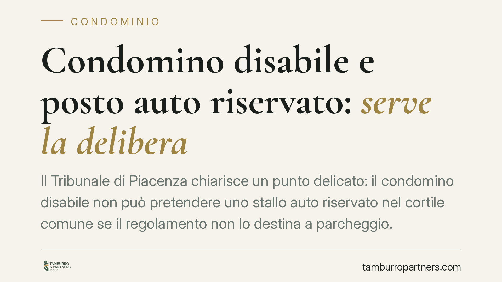

Condomino disabile e posto auto riservato: serve la delibera
Il Tribunale di Piacenza chiarisce un punto delicato: il condomino disabile non può pretendere uno stallo auto riservato nel cortile comune se il regolamento non lo destina a parcheggio. Prima occorre una delibera che modifichi la destinazione del bene, approvabile con la maggioranza agevolata prevista per abbattere le barriere architettoniche. La tutela esiste, ma passa per l'assemblea.

Il caso deciso dal Tribunale di Piacenza
I familiari di un condomino disabile avevano chiesto, anche in via d'urgenza, l'assegnazione di uno stallo auto riservato nel cortile condominiale. L'obiettivo: garantire alla persona con ridotta mobilità un accesso agevole all'abitazione.
Il Tribunale ha respinto la richiesta. La ragione non è un diniego di tutela, ma una questione di presupposti: il cortile non era destinato a parcheggio né dal regolamento né di fatto. Senza quella destinazione, non esiste uno "stallo" da riservare.
Inquadramento normativo
La tutela del condomino disabile trova fondamento nella L. 13/1989 (eliminazione delle barriere architettoniche negli edifici privati) e nella L. 104/1992. Sul piano condominiale, l'art. 1120 comma 2 n. 2 cod. civ. consente di approvare le opere dirette all'abbattimento delle barriere architettoniche con una maggioranza agevolata: quella dell'art. 1136 comma 2 cod. civ., cioè la maggioranza degli intervenuti che rappresenti almeno la metà del valore dell'edificio (500 millesimi).
Resta però un limite logico prima che giuridico. Riservare un posto auto incide sulla destinazione del bene comune. Se il cortile non è un parcheggio, assegnare uno spazio in via esclusiva a un singolo condomino significa modificarne l'uso. E l'uso individuale della cosa comune, disciplinato dall'art. 1102 cod. civ., incontra il limite del pari diritto degli altri condomini e del rispetto della destinazione esistente.
Di qui la conclusione del giudice: serve prima una delibera assembleare che muti la destinazione del cortile, consentendone l'uso a parcheggio. Solo dopo si può ragionare su uno stallo riservato. Lo strumento esiste, ma l'ordine dei passaggi è vincolante.
Perché la via d'urgenza non basta
I ricorrenti avevano agito anche ex art. 700 c.p.c., il provvedimento cautelare d'urgenza. Ma il rimedio presuppone un diritto già esistente da proteggere. Qui il diritto allo stallo non era ancora sorto, mancando la delibera che ne costituisce il presupposto. Il giudice non può sostituirsi all'assemblea creando una destinazione che il condominio non ha ancora deciso.
Implicazioni pratiche
Per il condomino disabile e i suoi familiari, la pronuncia indica un percorso preciso, non uno sbarramento. La legge offre una maggioranza di favore proprio per rendere più semplice l'approvazione di interventi a tutela della mobilità. Ma il confronto in assemblea resta imprescindibile quando l'intervento tocca la destinazione di un bene comune.
Per l'amministratore, la decisione segna la linea di condotta: di fronte a una richiesta del genere, non può assegnare autonomamente lo spazio, ma deve portare il tema all'ordine del giorno dell'assemblea, illustrando la maggioranza applicabile e le implicazioni sulla destinazione del cortile.
Per il condominio nel suo insieme, la pronuncia ricorda che la tutela della persona disabile e il rispetto delle regole sulla proprietà comune non sono in contrapposizione: convivono attraverso il procedimento assembleare.
Cosa fare in concreto
- Verifica la destinazione del cortile. Controlla regolamento condominiale, titoli e uso effettivo: solo se il bene è (o diventa) destinato a parcheggio può esistere uno stallo riservabile.
- Richiedi all'amministratore la convocazione dell'assemblea. Formula per iscritto la richiesta di inserire all'ordine del giorno la modifica di destinazione e l'assegnazione dello stallo.
- Documenta la condizione di disabilità. Allega certificazione medica e riferimenti alla L. 104/1992: rafforzano l'applicabilità della maggioranza agevolata ex art. 1120 c.2 n.2 c.c.
- Valuta la delibera con la maggioranza corretta. Assicurati che la decisione sia assunta con i quorum dell'art. 1136 comma 2 c.c., per prevenire future impugnazioni.
- Considera il ricorso d'urgenza solo dopo la delibera. Lo strumento ex art. 700 c.p.c. ha senso quando il diritto è già riconosciuto e ne è ostacolata l'attuazione, non per crearlo.
---
*Contributo informativo a cura di Tamburro & Partners - Avv. Giuseppe Tamburro. Non costituisce parere legale.*
Ogni condominio ha una storia a sé.
Se gestisci un'amministrazione e vuoi un confronto su una specifica questione condominiale, scrivi allo studio. Ti rispondiamo entro un giorno lavorativo.